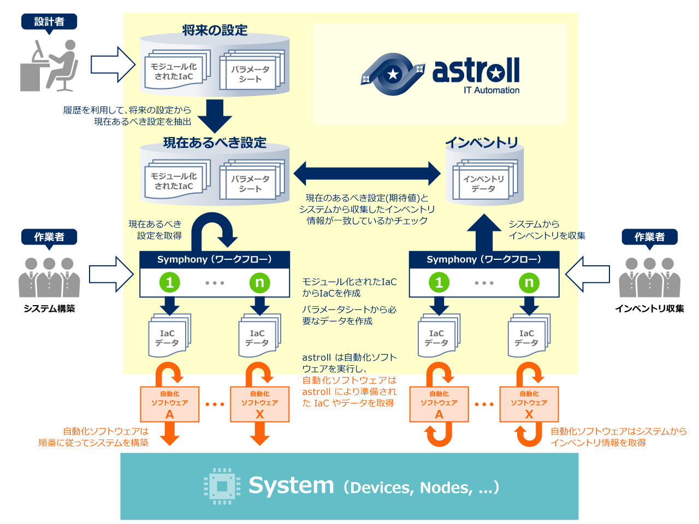
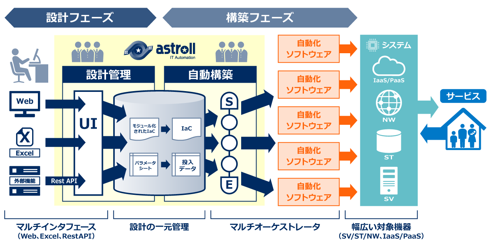

astroll IT Automation が目指すシステムライフサイクル

astroll IT Automation の概要

一元管理されたシステムのパラメータを様々な手段でメンテナンス可能
astrollを利用すれば、システムに投入するパラメータを一元管理できます。パラメータはWeb UIを利用して簡単にメンテナンスを行うことができます。
またWeb UIの他にも、使い慣れたExcelシートを利用したり、astrollのREST APIを利用したりしてメンテナンスを行うことができます。
構築コードをモジュール化して管理することによる再利用性の向上
astrollは構築コードをモジュール化して管理できます。
astrollを利用したシステムの自動構築は、モジュール化された構築コードを繋ぎ合わせてワークフローを作成し、そのワークフローとパラメータを組み合わせることで実行されます。そのため、共通的な構築コードを切り出してモジュール化することにより、構築コードを様々なワークフローで再利用することができます。
自動化ソフトウェアの実行管理

ワークフローを構成する構築コードは、ANSIBLEをはじめとした自動化ソフトウェアによって実行されます。どの自動化ソフトウェアを動作させるのかは、構築作業の内容と自動化ソフトウェアの特徴とのマッチングで選択して頂くことが可能です。
実行状況をリアルタイムで監視
自動化ソフトウェアによる構築コードの実行状況をリアルタイムに監視できます。
ワークフローの途中に保留ポイントを設けることができます。また実行途中に想定外の事象が発生した場合に緊急停止できます。
実行後には実行ログを収集し、実行の成否をレポートします。
astroll IT Automation の応用
システムのインベントリ情報の取得と収集
自動化ソフトウェアの構築コードでインベントリ情報を取得すれば、それらのインベントリ情報はastrollに自動収集できます。
IT資産管理にも活用して頂くことができます。
システムのインベントリ情報の妥当性をチェック
astrollはシステムに投入予定のパラメータを世代管理できます。そのため現時点でシステムに設定されているべきパラメータの期待値をパラメータの履歴から抽出が可能です。
現時点でシステムに設定されているべきパラメータの期待値と、システムから収集したインベントリ情報とを比較することで、システムのインベントリ情報の妥当性をチェックできます。